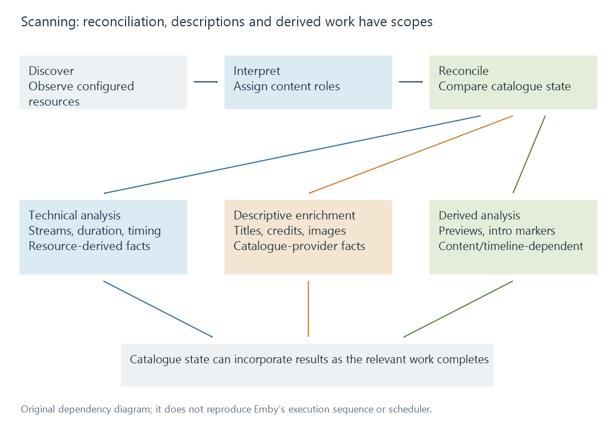

Library scanning and catalogue reconciliation
Library scanning discovers media resources and reconciles their recognized identities, descriptions and availability with the catalogue.
A library scan compares available resources with the catalogue the server already holds. It discovers additions, notices changes, interprets names and structure, and updates the represented items according to the product's reconciliation rules.
That can involve much more than listing filenames, but it need not mean decoding every second of every film. Discovery, descriptive metadata retrieval, technical probing and derived analysis are related operations with different purposes.
From a path to a described item
An explanatory pipeline is:

This is a conceptual dependency diagram. It is not Emby's internal scheduler or an assertion that its tasks run in this exact sequence.
Discovery finds entries within configured roots and supported resource structures. It needs to determine which are media, supplementary files, directories or other material.
Interpretation gives the resource a role. A season/episode filename, a movie folder, a trailer association or an embedded music tag can supply clues. The configured content model provides context.
Reconciliation compares the observed resource with existing catalogue state. A newly observed path, a changed resource and a no-longer-observed path call for different decisions.
Enrichment adds descriptions and technical facts. A provider lookup supplies catalogue information; a probe inspects the actual resource. Neither operation substitutes for the other.
Derived work can create previews or detect recurring intervals. It depends on media content and may be scheduled or completed separately from the basic catalogue update.
The phases explain why a new entry can appear with a filename-derived title before its final poster or analysis is available. A usable path and a completed description are different milestones.
A before-and-after inventory
Use this original observation set:
| Resource | Previous observation | Current observation | Question for reconciliation |
|---|---|---|---|
| A | Present | Present, unchanged signature | Can existing analysis be reused? |
| B | Present | Present, changed signature | Which technical or derived facts became stale? |
| C | Absent | Present | What entity and source does it represent? |
| D | Present | Not found under a reachable root | Was it removed or moved? |
| E | Present | Its root could not be read | Is availability unknown rather than confirmed absent? |
A signature here means the scanner's chosen change evidence, not necessarily a complete-file hash. Incremental scans explains the trade-off between cheap change detection and certainty.
The final two rows are especially important. A reachable directory that no longer contains D supplies different evidence from a failed attempt to read E's entire disk. “Not observed” is a result; its cause determines how much can be concluded. Actual retention/removal behavior belongs to the server's implementation and settings.
A move can appear as a disappearance and an addition. Preserving the original logical identity then requires sufficient evidence to relate the two observations. The same title alone is not necessarily sufficient.
A file can appear before it is complete
During a copy, a resource may already have its final-looking name while its size is still growing. Container headers can be incomplete, or essential index information can arrive later. A probe at that moment can fail or discover only a provisional description.
A change notification tells a scanner that something happened. It does not certify that the final media is complete and ready. Rechecking, observing stability or using a deliberate publish/rename workflow are possible ways for software to handle that dependency; they are not universal guarantees supplied by the filesystem.
Likewise, a readable directory does not establish that every file can be opened. Resource-level permissions and transient errors can differ from directory enumeration.
These distinctions help interpret a scan that has found a title but has not yet supplied a dependable duration or stream list.
Scan, refresh and extraction answer different questions
| Operation | Primary question |
|---|---|
| Discover/reconcile library resources | What media is present, changed or missing? |
| Refresh descriptive metadata | What catalogue fields should be retrieved or updated? |
| Probe a source | What streams and technical properties does this resource contain? |
| Extract seek previews | Which small pictures represent its timeline? |
| Detect episode intros | Which interval appears to be a recurring introduction? |
A metadata refresh may act on an already known item without discovering another path. Replacing a poster does not establish that cached stream analysis matches a newly replaced video. Finishing enumeration does not establish that preview extraction has finished.
Emby's Library Setup, metadata manager and scheduled-task documentation describe the corresponding product controls. The Learn distinction is about the work they request, rather than their click paths.
Why scan duration varies
The cost depends on the number of directory entries, storage latency, how much analysis can be reused and which new work is required. Many small files can be expensive to enumerate even if their total byte count is low. A few large files may be cheap to identify but costly to decode for content-derived analysis.
Provider access contributes another cost: a new match can require network requests that an unchanged, already described item does not. Image retrieval and background extraction add further dependencies.
A completed scan therefore has a defined scope. It is useful to ask which catalogue reconciliation finished and which derived tasks remain, rather than treating one percentage as a universal measure of every library operation.
See Also
- Incremental library scans
- Technical analysis of library media
- Media item identity
- How metadata providers work